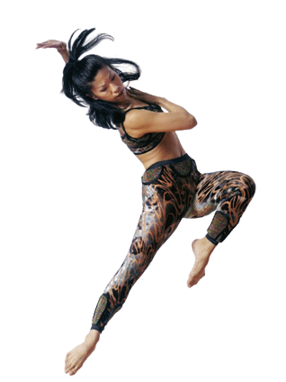

Humans used to dance and sing a lot more than we do now. It seems to me that the link between happiness and survival is the key here.
A lot more used to be at stake for the average person. If the yield wasn’t good then there may not be enough food so survival would be challenged. Nowadays we take food for granted.
It seems there is less to live for so we live less yet do more.. It seems a strange notion but consider my example. On average I watch 2 or 3 films a year, 100 years ago 1 play a year would be an average. I take from those 2/3 films some excellent CGI, one week narrative and maybe a little bit of education. 100 years ago that play would of rung in my head for days as there were many fewer distractions.
I know this blog is a bit of a rant but it raises serious questions about humans inability to think, act, inspire, create or produce when we have no motivation, aspirations and everything we do is so average because there are so many of us and we have everything we want.
Ask yourself this.. What are you really trying to achieve in your life? Is it obtainable? If not, why? If you aren’t trying to achieve anything then what’s the point?
I guess I’m trying to explain why people aren’t as happy as maybe we were after WW2. There is a certain level of happiness that is obtained by a feeling of accomplishment. Accomplishment should be evaluative and equatable. We have shifted from a goal or survival to a goal of knowledge as knowledge fueled our survival. I ponder where the next shift will take us..
Knowledge —> ?
My guess is that it will be something that improves knowledge in the same way knowledge improved our survival. Real time knowledge? Anyone made a google bio chip yet? :P
{kind=link}